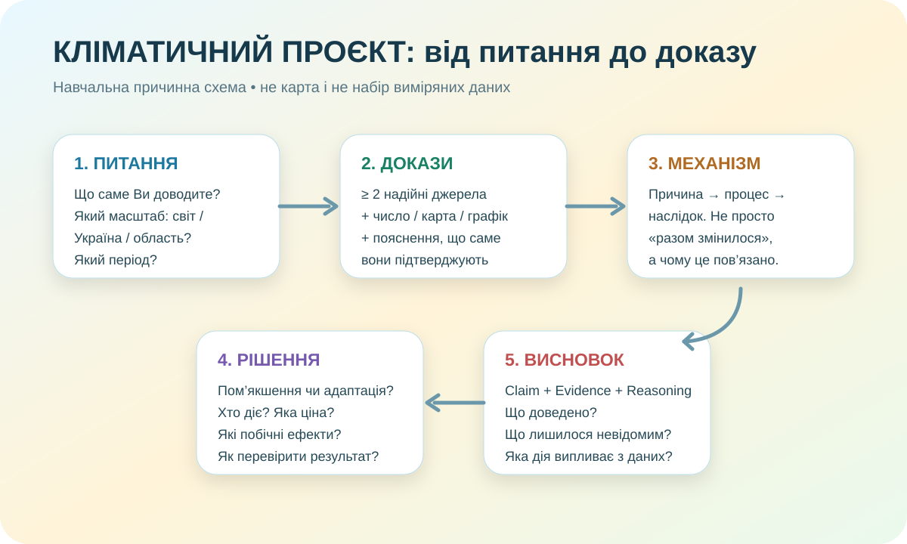

Ви — не «рефератописець», а маленька аналітична група
IPCC: людська діяльність, передусім викиди парникових газів, однозначно спричинила сучасне глобальне потепління; середня глобальна температура у 2011–2020 була приблизно на 1,1 °C вищою за 1850–1900.
IPCC • Synthesis Report ↗
Оберіть одну проблему. Три одразу — це не амбіція, це спосіб нічого не довести.
Що спричиняє зміну клімату?
Розрізніть природні чинники й сучасний антропогенний вплив. Покажіть механізм парникового ефекту та роль викидів.
Ключове питання:Як науковці відрізняють людський сигнал від природної мінливості?
Які наслідки зміни клімату в Україні?
Працюйте з температурою, опадами, посухою, хвилями спеки, водою, екосистемами чи господарством.
Ключове питання:Який наслідок уже видно в даних і чому він важливий саме для України?
Чи можливий вплив людини на клімат?
Не «врятуємо планету сортуванням». Розділіть пом’якшення зміни клімату й адаптацію та оцініть масштаб дії.
Ключове питання:Які дії реально зменшують ризик, ким вони здійснюються і як виміряти ефект?
Джерело — це частина доказу
Для кліматичного проєкту «десь бачив у TikTok» не стає надійнішим від того, що відео набрало два мільйони переглядів. Перевіряйте автора, метод, дату, дані й можливість перевірки.
Оцінює тисячі рецензованих досліджень; добре для базових висновків і рівнів упевненості.
Відкрити ↗Climate Change Viewer: історичні спостереження 1946–2020 та кліматичні проєкції для України.
Climate Viewer ↗Вебсервіс УкрГМІ для оцінки й прогнозування посух, агрогідрологічні дані та ризики.
Дані про посуху ↗У 2024 році Європа мала найтепліший рік у спостереженнях; звіт описує тепло, повені й тепловий стрес.
WMO Europe 2024 ↗Швидка перевірка джерел
Зберіть не факти «для кількості», а ланцюжок доказів
Доказ 1 — число / тренд
Доказ 2 — карта / графік / регіон
Зберіть прототип, який можна показати іншій людині
Стрес-тест: чи переживе Ваш проєкт три незручні питання?
1. «Звідки це відомо?»
Чи є посилання на першоджерело? Чи можна знайти метод і період даних?
2. «Чому це причина?»
Чи пояснили Ви механізм, а не лише показали два графіки поруч?
3. «І що з цього?»
Чи випливає запропонована дія саме з Ваших доказів, а не з красивого плаката?
Рубрика 10 балів: за що саме нараховуються бали
Питання
Чітке, досліджуване, має масштаб і не підмінює відповідь.
Джерела
Щонайменше 2 надійні джерела, є посилання й зрозумілий автор/установа.
Докази
Є дані/карта/графік і пояснено, що саме вони показують.
Механізм
Причина, процес і наслідок логічно пов’язані; немає підміни кореляцією.
Висновок
CER + реалістична дія/адаптація + межі того, що дані не доводять.
Поясніть проєкт за 30 секунд
Формула: «Ми досліджуємо… Наш найсильніший доказ… Він важливий, бо… Тому реалістична дія/висновок…»
00:30Домашнє: довести прототип до продукту, а не прикрасити порожнечу
Мінімальний комплект: 1) питання; 2) два джерела; 3) один числовий доказ; 4) одна карта/графік/схема; 5) причинне пояснення; 6) рішення або адаптація; 7) посилання.
Електронні підручники ІМЗО ↗